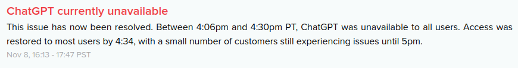
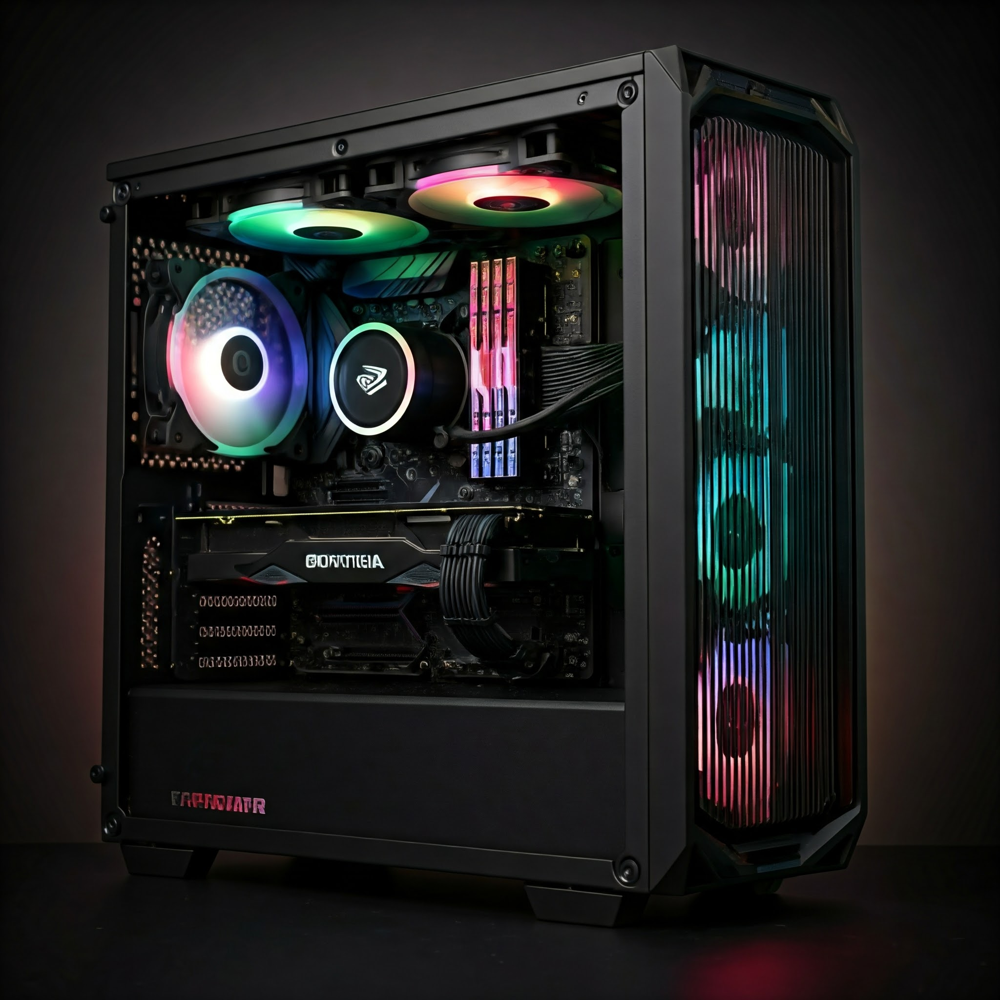
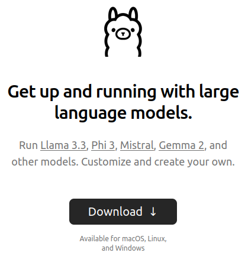
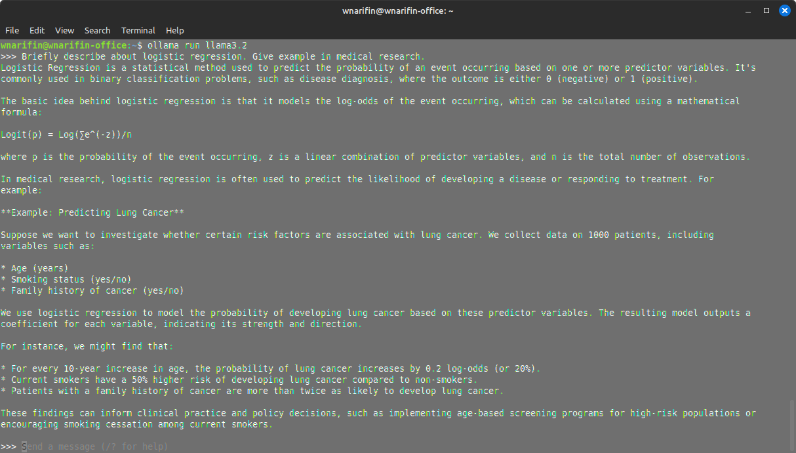
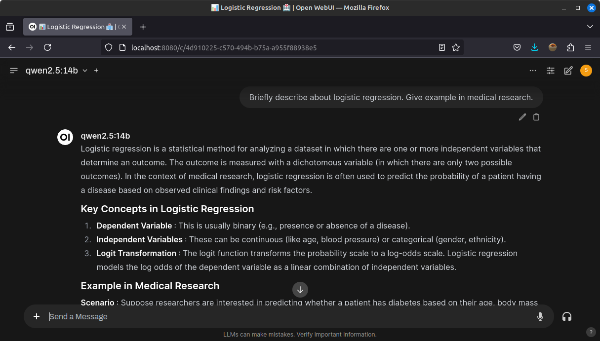
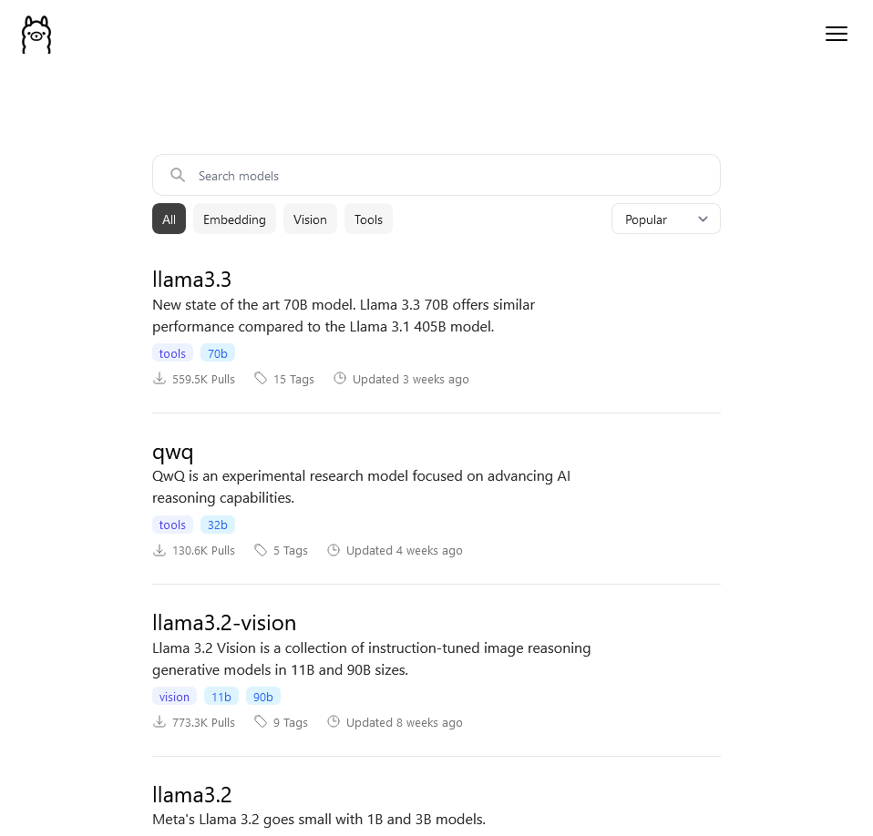
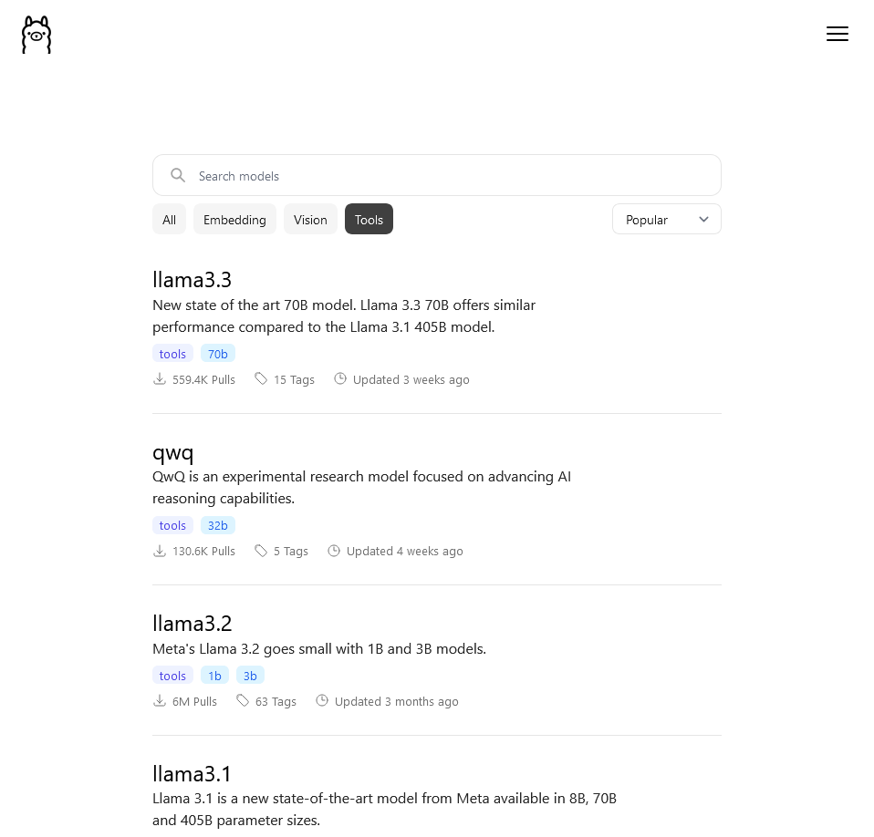
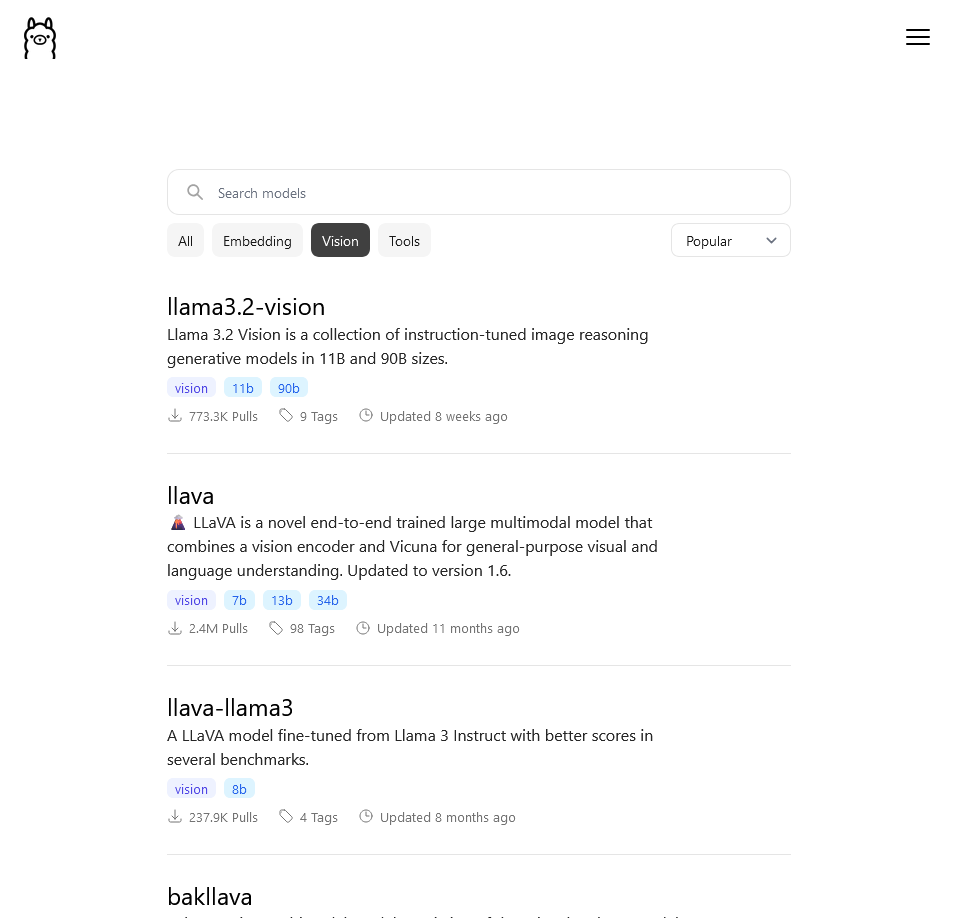
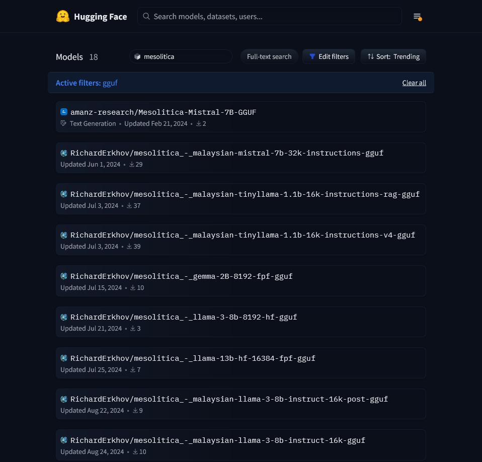
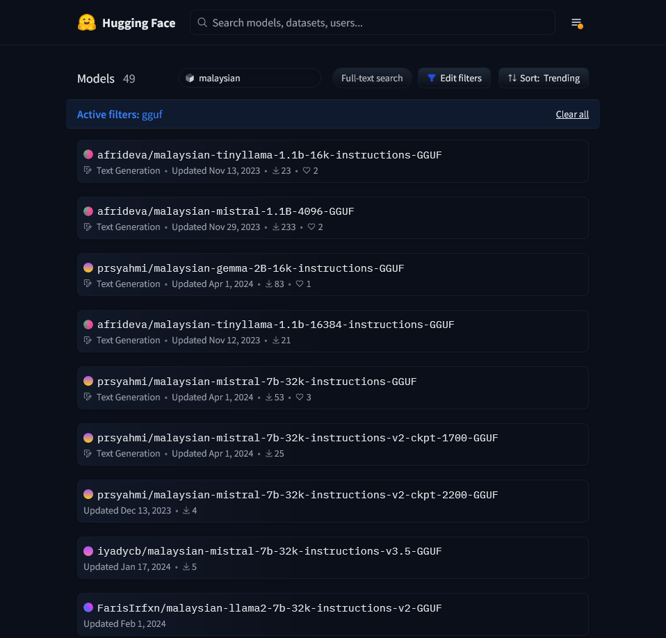

library(rollama)
pull_model("llama3.2")
pull_model("moondream")
pull_model("nomic-embed-text")2 Local Large Language Models
2.1 Introduction
Local large language models (LLMs) “are versions of these powerful language models that run directly on a user’s device or local network, rather than in the cloud” ("Unleashing the Power of Local LLMs", 2024). With the availability of relatively powerful consumer-grade GPUs with reasonably sized VRAM, we can run many open-weight LLM models locally. We will go through the reasons, requirements and options of running LLMs locally, and how to run it in R.
2.2 Reasons of Using Local LLMs
2.2.1 Exhibits
These are some of my main concerns about relying too much on any LLM services online, which can be illustrated clearly in these two pictures:

2.2.2 Advantages
Local LLMs offer five key advantages ("Unleashing the Power of Local LLMs", 2024) that make them a compelling choice for various applications.
Privacy is a major benefit, as these models process data entirely on your device, ensuring that sensitive information never leaves your control. Additionally, local LLMs provide reduced latency and offline functionality, making them ideal for scenarios where internet connectivity is unreliable or unnecessary. Without the need for constant cloud computing, users can enjoy faster response times and leverage AI capabilities even when disconnected from the web.
Using local LLMs is also cost-effective, as it eliminates ongoing expenses associated with cloud services, particularly for heavy users. Lastly, local deployment allows for greater customization, enabling fine-tuning of models to specific domains or use cases to meet precise needs.
2.2.3 Personal reasons
Privacy: As a university lecturer, some tasks are sensitive in nature, such as writing exam questions, brainstorming novel ideas, and drafting top-secret research. Therefore, privacy is crucial. Local LLMs ensure that all data remains on my device, keeping the data private.
No Downtime: With local LLMs, I can work with them as long as my PC is running. I can work even if the internet goes down. This reliability ensures that I can focus entirely on my work.
Experimentation: As a researcher, I love the freedom to experiment and iterate freely. Local LLMs provide this flexibility by allowing me to experiment with different models and explore different settings without worrying about whether I have reached my token limit of the day! As of today, local LLMs offer so much, and it is exciting to explore what they can do.
2.3 Using Local LLMs
2.3.1 Hardware Requirements
For starter, you’ll need a gaming-specs PC/Laptop with an NVIDIA GPU.
As a disclaimer, I am not affiliated with NVIDIA, although I specifically mention NVIDIA GPUs here. As we will see later, packages/software for running local LLMs support NVIDIA GPUs, while the support for other GPUs may vary.

And, of course, it is cool to have this one (i.e. a gaming PC) sitting on your desk for the sake of research. Admittedly, this is a gaming-specs PC, so it’s up to you what you want to do with it.
2.3.2 Options for Running Local LLMs
There are many options to run local LLMs, some of them are:
- Ollama (https://ollama.com/)
- Ollama + Open WebUI (https://openwebui.com/)
- Msty (https://msty.app/)
- LM Studio (https://lmstudio.ai/)
- GPT4All (https://www.nomic.ai/gpt4all)
- vLLM (https://docs.vllm.ai/)
- llama.cpp (https://github.com/ggerganov/llama.cpp) – essentially the originator of all listed above.
In this book, we will use Ollama as the primary driver for running local LLMs and integrate it with our beloved R.

As it is, Ollama is run in CLI,

For daily use, Ollama is typically combined with a GUI, such as Open WebUI,

2.4 Running Local LLMs in R
2.4.1 Ollama Meets R
There are several options that utilizes Ollama:
-
rollama(https://jbgruber.github.io/rollama/) -
ollamar(https://hauselin.github.io/ollama-r/) -
mall(https://mlverse.github.io/mall/)
There are also several other options that allow tapping into other LLM APIs other than Ollama:
-
gptstudio(https://michelnivard.github.io/gptstudio/) andgpttools(https://jameshwade.github.io/gpttools/) -
tidyllm(https://edubruell.github.io/tidyllm/)
2.4.2 Getting Started with rollama
In this book, we will mainly rely on rollama package (Gruber & Weber, 2024). To get started, there are three basic preliminary steps:
- Install Ollama https://ollama.com/download (this depends on the OS in your PC)
- Install
rollamapackage in R withinstall.packages("rollama") - Find suitable models in https://ollama.com/search

Available LLM models in Ollama are divided by tasks that they perform:
- Text to Text – Text generation, i.e. text in / text out (a typical LLM)
Examples: Llama (Meta, https://www.llama.com/), Qwen (Alibaba, https://qwenlm.github.io/gemm), DeepSeek (DeepSeek, https://www.deepseek.com/), Gemma (Google, https://ai.google.dev/gemma), Mistral (Mistral AI, https://mistral.ai/) and Phi (Microsoft, https://azure.microsoft.com/en-us/products/phi).

- Image + Text to Text – Vision LM, i.e. image + text in / text out
Examples: LLaVA (https://llava-vl.github.io/), Llama3.2-Vision (Meta, https://www.llama.com/), Moondream (Moondream AI, https://moondream.ai/)and MiniCPM-V (ModelBest, https://modelbest.cn/en).

- Text to Number – Embedding generation, i.e. text in / numerical vector out
Examples: Nomic Embed (Nomic AI https://www.nomic.ai/) and mxbai-embed-large (Mixedbread, https://www.mixedbread.ai/).
2.4.3 Basic rollama Usage
Install models
You can pull models from Ollama with pull_model(). Let’s pull llama3.2, moondream, and nomic-embed-text for starter,
List installed Models
You can list installed models in Ollama,
Query
query() is used when you want to ask a one-off query. The LLM will not remember the previous query.
q = "Describe the history of R programming language"
query(q, "llama3.2")── Answer from llama3.2 ────────────────────────────────────────────────────────The R programming language was created in the mid-1990s by Ross Ihaka and
Robert Gentleman at the University of Auckland, New Zealand. Here's a brief
history of R:**Early Days (1992-1995)**Ross Ihaka and Robert Gentleman were both statisticians and researchers who
wanted to create a software package for statistical analysis that was easy to
use, flexible, and accessible. They began working on the project in 1992 and
started calling it "S", after the programming language S-PLUS.**Release of S (1995)**The first release of S, version 3.0, was made available in 1995. This initial
version was a significant improvement over earlier versions but still had some
limitations.**Development of R (1997-2001)**In 1997, Ihaka and Gentleman decided to create a new project called "R", which
stood for "Rehabilitation" or "Revitalization" of the S language. They wanted
to make the software more user-friendly and expand its capabilities.**Release of R 0.5 (1998)**The first release of R, version 0.5, was made available in 1998. This version
introduced several key features, including support for plotting, data
visualization, and statistical modeling.**Community Support (2001-2004)**In 2001, the R project gained momentum with the creation of a mailing list,
which allowed users to ask questions, share ideas, and collaborate on
development. The R community grew rapidly, and by 2004, there were hundreds of
contributors to the project.**Release of R 2.0 (2005)**The release of R 2.0 in 2005 marked a significant milestone for the language.
This version introduced several new features, including support for
object-oriented programming, improved data visualization, and enhanced
statistical modeling capabilities.**R Foundation Established (2006)**In 2006, the R Foundation for Statistical Computing was established to manage
and coordinate the development of R. The foundation has played a crucial role
in promoting the language and providing support to users worldwide.**Release of R 3.0 (2012)**The release of R 3.0 in 2012 marked another major milestone for the language.
This version introduced several key features, including improved data
visualization, enhanced statistical modeling capabilities, and significant
performance improvements.**Current State (2020-Present)**Today, R is one of the most popular programming languages used in data science
and statistical analysis. The language has a thriving community of developers,
users, and contributors, with thousands of packages available for various
tasks, from data visualization to machine learning.Overall, the history of R is marked by its commitment to simplicity,
flexibility, and accessibility. From its humble beginnings as S to its current
status as a leading data science language, R has become an indispensable tool
for statisticians, researchers, and data scientists around the world.Chat
chat() is used when you want to ask several consecutive queries. The LLM will remember the previous queries. This is the behaviour of chat LLMs.
q = "Describe the history of R programming language"
chat(q, "llama3.2")── Answer from llama3.2 ────────────────────────────────────────────────────────The R programming language has a rich and fascinating history that spans over
three decades. Here's an overview:**Early Beginnings (1980s)**R was first conceived in the early 1980s by Ross Ihaka, a statistician at the
University of Auckland in New Zealand. Ihaka began working on a statistical
analysis system for his own research needs, which eventually evolved into what
would become the R programming language.**The First Release (1993)**In 1993, Ihaka and Robert Gentleman, another statistician at Bell Labs in the
United States, released the first version of R, called "S-PLUS" or "R-1." This
initial release was based on the S programming language, which was developed by
John Chambers at AT&T's Bell Labs.**The Name Change (1995)**In 1995, Ihaka and Gentleman decided to rename the system from "S-PLUS" to
simply "R," reportedly because they didn't want to associate it with the
commercial software S-PLUS.**The R Development Team Forms (1996)**As R gained popularity, a group of developers formed to continue its
development. The R Development Core Team was established in 1996, and it has
since been responsible for maintaining and updating the language.**R 1.0 Released (2003)**In 2003, the first official version of R, R 1.0, was released. This marked a
significant milestone in the language's development, as it introduced many new
features and improvements.**The CRAN (2002)**Around the same time, the Comprehensive R Archive Network (CRAN) was
established in 2002. CRAN is now the official repository for R packages, where
users can upload and share their own software components.**R Packages Ecosystem (2000s)**In the mid-2000s, the R ecosystem began to grow rapidly, with the creation of
numerous package repositories like CRAN and Bioconductor. This led to a vast
array of tools and libraries available for data analysis and visualization in
R.**Recent Developments (2010s-present)**In recent years, R has continued to evolve with new features, such as:1. **Rcpp**: A bridge between R and C++, allowing developers to integrate C++
code into their R packages.2. **RShiny**: An interactive web application framework for creating
data-driven websites.3. **dplyr**: A popular package for efficient data manipulation and analysis.**The Future of R**Today, R is one of the most widely used programming languages in academia and
industry, particularly in the fields of statistics, data science, and machine
learning. The language's continued growth and development are driven by a
vibrant community of users and developers who contribute to its ecosystem
through new packages, plugins, and extensions.Overall, the history of R is a story of collaborative innovation, with
contributions from many individuals over several decades. Its enduring
popularity is a testament to its flexibility, power, and versatility as a tool
for data analysis and visualization.Continue with the chat,
chat("Summarize it", "llama3.2")── Answer from llama3.2 ────────────────────────────────────────────────────────Here's a brief summary:R programming language was first conceived in the 1980s by Ross Ihaka at the
University of Auckland. The first version, R-1, was released in 1993, but it
wasn't until 2003 that the official version R 1.0 was released. In the
mid-2000s, the Comprehensive R Archive Network (CRAN) was established, and the
ecosystem began to grow rapidly.In recent years, R has continued to evolve with new features like Rcpp, RShiny,
and dplyr. Today, R is a widely used language in academia and industry,
particularly in statistics, data science, and machine learning. Its enduring
popularity is driven by a vibrant community of users and developers who
contribute to its ecosystem.Key milestones:* 1980s: Ross Ihaka conceives the idea for R* 1993: First version of R released (R-1)* 2003: Official version R 1.0 released* 2002: Comprehensive R Archive Network (CRAN) established* Mid-2000s: R ecosystem grows rapidly with new package repositories and tools2.4.4 LLM Model Details
View the details
Important details of LLM models in your Ollama,
list_models() |> names() [1] "name" "model" "modified_at"
[4] "size" "digest" "parent_model"
[7] "format" "family" "families"
[10] "parameter_size" "quantization_level"list_models()[, c("name", "family", "parameter_size", "format", "quantization_level")]2.4.5 Terms to understand
Model size
- It usually described as the number of parameters in billions (B)
- Parameters = weights in deep neural networks
- Larger = better, but heavy to run (massive GPU requirement)
- Smaller = (maybe) not as good, but lighter to run (consumer GPU can run)
- Generally:
- 4B model = GPU 4Gb VRAM
- 8B model = GPU 8Gb VRAM
- 16B model = GPU 16Gb VRAM
Quantization
- It is a technique “to reduce the model’s memory footprint and computational requirements without significantly sacrificing performance”.
- The process reduces the precision of the weights of LLM models.
- Floating points: FP32, FP16; integers: Q2, Q4 (common, default in ollama), Q5, Q6, Q8. in bits, i.e. Q4 is 4-bit integer.
- Quantization allows us to run local LLMs in our consumer grade PC.
- More on quantization at https://huggingface.co/docs/hub/gguf#quantization-types, and this Youtube video by Matt Williams that explains it very well https://youtu.be/K75j8MkwgJ0?si=W3KBSRJPlI0QpMxr.
Context size
- Context window/size is number of tokens (words or sub-words) that can be LLM can receive/produce as input/output. - It is around 3/2 times words in a given text.
- You can try a context size calculator here: https://llmtokencounter.com/
- This Youtube video by Matt Williams really explains the concept very well https://youtu.be/-Lyk7ygQw2E?si=RJwx9Xpl80MIDnuF.
2.4.6 Pulling Additional Models from Huggingface
- Pull GGUF files from https://huggingface.co/models for use in Ollama
- You may find GGUF files for Malaysian LLM models (mostly fine-tuned and developed by mesolitica https://mesolitica.com/)


References
Gruber, J. B., & Weber, M. (2024). Rollama: Communicate with ollama to run large language models locally. Retrieved from https://jbgruber.github.io/rollama/
"Unleashing the Power of Local LLMs". (2024). Unleashing the power of local LLMs: A comprehensive guide. Website. Retrieved from https://localxpose.io/blog/unleashing-the-power-of-local-llms